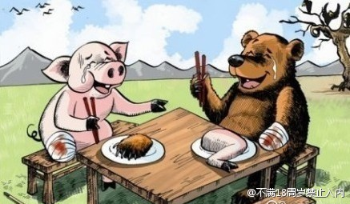

这个解读有意思。 //@徐宥箴:大家看不懂这个吗？猪拿着五块糖，让熊猜，耍诈说两块，熊没上当猜对了是5块。而猪又耍赖，只给了熊一块糖，说欠四块。这个故事告诉我们一个道理，猪是不可以被信任的。@不满18周岁禁止入内:一天，猪对熊说：你猜猜我的口袋里有几块糖？熊说：猜对了你给我吃吗？猪肯定的点点头：嗯，猜对了两块都归你！小熊咽了咽口水说：我猜五块！然后，猪恨恨地把口袋的糖给熊，说：蒜你狠，还欠你四块！ 